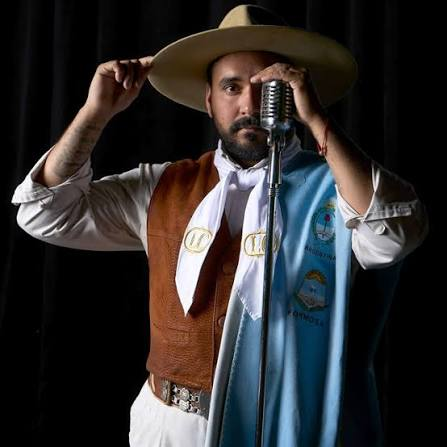
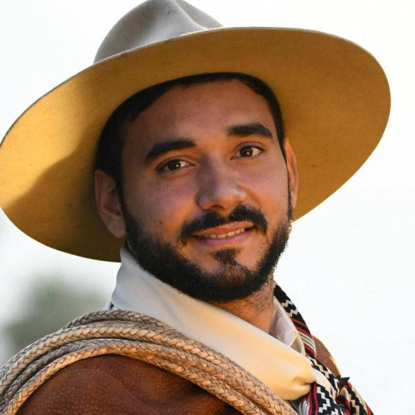
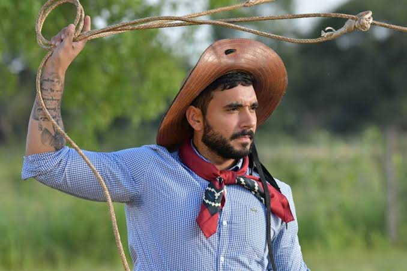
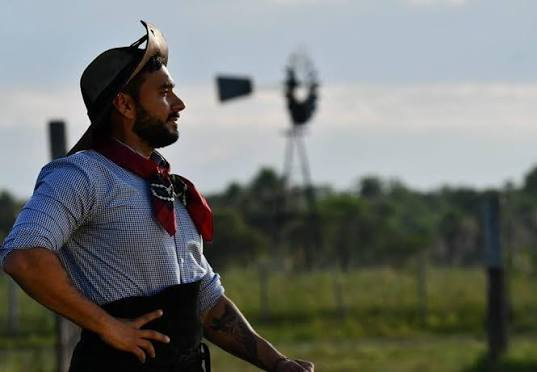
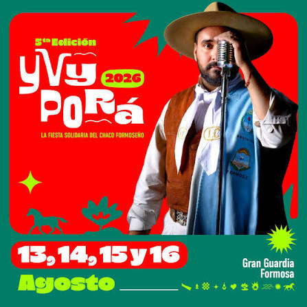

10 nov 2026
San Antonio de Areco
Buenos Aires · Argentina
Lugar a confirmar
Más informaciónCantautor · Folklore argentino
“Soy lo que canto”: la voz del monte, del Chaco y de la tradición criolla.
Próxima fecha




Semblanza
Lázaro Caballero (Lázaro Caballero Moreno) es un reconocido cantautor y compositor de folklore argentino, nacido el 4 de septiembre de 1992 en Formosa Capital.
Con un estilo profundamente ligado al monte, al Chaco salteño y a las tradiciones criollas, se ha consolidado como una de las máximas figuras contemporáneas de la música popular de su país.
Soy lo que canto

5ª Edición · 2026
La fiesta solidaria del Chaco formoseño. Se vivió el 13, 14, 15 y 16 de agosto en Gran Guardia, Formosa. Música, tradición y un pueblo que se une para ayudar.
En vivo
Los grandes escenarios del folklore argentino, desde Cosquín hasta Jesús María.

Jesús María 2025

Cosquín

Cosquín 2022

Jesús María 2026

Formosa

Yvy Porá 2024
En el camino
10 nov 2026
San Antonio de Areco
Buenos Aires · Argentina
Lugar a confirmar
Más información21 nov 2026
Córdoba
Argentina
Lugar a confirmar
Más información12 dic 2026
Salta
Argentina
Lugar a confirmar
AgotadoFechas ilustrativas. Configurá Supabase para mostrar la agenda real.